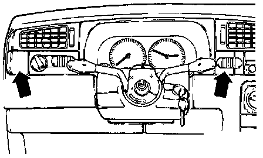
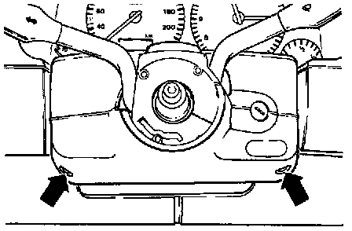

Instrument Cluster / Carrier: Service and Repair
CAUTION: Before working on the electrical system:- Obtain security code for anti-theft radio.
- Disconnect battery Ground (GND) strap.
- Be sure the ignition is switched OFF (also applies when connecting the battery). Failure to do so may damage the Engine Control Module (ECM).
- Disconnecting the battery may cause the basic setting of the ECM to be erased. This may result in driveability problems.
NOTE:
- When removing the instrument cluster, it is not necessary to remove the steering wheel. In the images that follow, the steering wheel has been deleted from some illustrations in order to more clearly illustrate the procedure.
- Instrument cluster modifications. Application and ID

- Carefully pry off left-side trim panel (left arrow), press release button on side of light switch and remove light switch -E1-. Service and Repair
- Carefully pry off right-side trim panel (right arrow).
NOTE:
- Left and right-side trim panels may be replaced by additional switches or warning lamps, depending on equipment level.
- On vehicles equipped with heated seats, the driver's heated seat regulating switch -E94- and passenger's heated seat regulating switch -E95- are located on the right side of the instrument cluster.

- Remove screws (arrows) and remove upper part of steering column trim.

- Remove two screws (arrows) from instrument panel.
- Release instrument cluster trim side retainers by pulling firmly at top.
- Remove instrument cluster trim.

- Remove mounting screws (arrows) from instrument cluster.
- Tilt instrument cluster downward.
- Disconnect two multi-point connectors from back of instrument cluster.
- Remove instrument cluster.